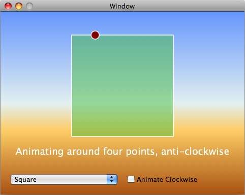

Please note: this article is part of the older "Objective-C era" on Cocoa with Love. I don't keep these articles up-to-date; please be wary of broken code or potentially out-of-date information. Read "A new era for Cocoa with Love" for more.
Simplifying your code using NSDictionary
Computers programs are good at mindless repetitive tasks, they are not good at broad decision trees. In this post, I will show you a way of eliminating conditionals from your code that are based on program state by using an array of NSDictionary objects to maintain state.
Introduction
In general, the more code branches a computer program has, the harder it is to write and the harder it is to test and maintain.
Comparatively, data tends to be easier to write. When separated from the code that processes it, data can also allow for cleaner design — placing dependent values together, and removing the complexity of the data from the structure of the code.
This is not a novel idea but I think it is a really useful technique that programmers too-often forget. The general idea is not specific to NSDictionary but due to NSDictionary's flexibility and broad support in Cocoa, it is an excellent choice for the task.
The sample program
Download the XCode 3.1 project file for the sample program here (62kB).
To illustrate this and show ways of overcoming conditionals and complexity, I will present the following program:
This program has two state variables:
- The popup menu (with the two states "Square" and "Triangle")
- The checkbox (again, two states)
The state of these controls affects:
- the shape drawn in the window
- the color of the shape
- the direction that the red circle animates around the shape
- whether the shape is filled or drawn as a border only
- the label under the shape (which is dependent on both controls)
Writing the behavior in code for every state results in at least 5 places in the program dependent on the state of these controls and conditionals with different branches at each of these points.
If the program is extended with more states added to the popup menu, this would result in further conditionals at every single one of these points, causing an increase in program complexity with each new item.
Lots of conditionals and data embedded in code
The code in the program that returns the "Animating around four points, anti-clockwise" label looks like this:
if ([[self stateName] isEqual:@"Square"])
{
if (self.clockwise)
{
return @"Animating around four points, clockwise";
}
else
{
return @"Animating around four points, anti-clockwise";
}
}
else if ([[self stateName] isEqual:@"Triangle"])
{
if (self.clockwise)
{
return @"Animating around three points, clockwise";
}
else
{
return @"Animating around three points, anti-clockwise";
}
}You can see that if the number of items in the popup menu were doubled, it would double the size of this code.
The branches in this code exist because the text of the label is a piece of dependent state. The state of the popup menu implicitly affects the text of the label. Unfortunately, changing the popup menu is only changing a single string value (the "stateName") — we are forced to generate the dependent values from this throughout the code.
Eliminating conditionals and removing the data from the code
Programming languages are literal beasts and they work better when the code (and the relationships within it) are explicitly defined. So we need a way to explicitly describe all of the dependent properties and associate these properties with the popup menu states upon which they depend.
In replacing the above code fragment, the text of the label must exist somewhere — nothing will make that requirement go away — but we can remove the hard work from the code by using an NSDictionary created from a PropertyList file that looks like this:
We will bind the content of the popup menu to this array of NSDictionary and make each item in the popup menu get its name from the "stateName" value in each NSDictionary.
The result from doing this is that the above code fragment to fetch the current label becomes:
return [self.selectedItem objectForKey:[self clockwiseKey]];We have traded complexity of code for volume of data. Since it is normally considered simpler to generate hundreds of rows of data than hundreds of blocks of code, this is a good trade-off. Moving the data from the program out of the code and into a common place also has advantages for managing, understanding and designing our program as a whole.
Method choices can go into data too
In the program, the "Square" is drawn by filling in an NSBezierPath. The "Triangle" is drawn as just a border.
Different methods are invoked to achieve these two options. Without the state NSDictionary, the code would look like this:
if ([[stateController stateName] isEqual:@"Square"])
{
[path fill];
}
else if ([[stateController stateName] isEqual:@"Triangle"])
{
[path stroke];
}Even this choice between two different pieces of code can be moved into the data because of Objective-C's ability to lookup selectors at runtime:
SEL drawSelector = NSSelectorFromString(
[stateController.selectedItem objectForKey:@"drawSelector"]);
[path performSelector:drawSelector withObject:nil];Again, all conditionals are gone; every choice dependent on state has been moved into the data instead.
Limitations
The biggest limitation of this approach to program design is the complexity of the data itself. Moving values, rules and dependencies into a data file is good, until the structure of the data becomes complex enough that it amounts to a programming language itself and you're no longer reducing the complexity of the code+data as a whole.
The data itself may also need some management. Loading of the data is simple if you are using a generic file format (like a PropertyList) but generic formats won't provide ideal storage for your data types.
To show how working with the data format can become burdensome, let's take a look at the hard-coded version of the program setting the drawing color:
if ([[stateController stateName] isEqual:@"Square"])
{
[[NSColor colorWithCalibratedRed:061.0/255.0 green:187.0/255.0 blue:056.0/255.0 alpha:122.0/255.0] set];
}
else if ([[stateController stateName] isEqual:@"Triangle"])
{
[[NSColor colorWithCalibratedRed:187.0/255.0 green:056.0/255.0 blue:186.0/255.0 alpha:122.0/255.0] set];
}With only two colors enumerated in code, this is arguably simpler than loading the same values from the NSDictionary:
NSDictionary *drawColor = [stateController.selectedItem objectForKey:@"drawColor"];
[[NSColor
colorWithCalibratedRed:[[drawColor objectForKey:@"red"] doubleValue]
green:[[drawColor objectForKey:@"green"] doubleValue]
blue:[[drawColor objectForKey:@"blue"] doubleValue]
alpha:[[drawColor objectForKey:@"alpha"] doubleValue]]
set];Since a PropertyList doesn't hold NSColor directly, we must break the color up into its components for the PropertyList and construct the color from the components when we need it.
Remember, despite the added complexity of loading the values here, the key advantage of the from-NSDictionary version is that it will scale better; the from-NSDictionary version won't require further code if further options are added to the popup menu.
Conclusion
The sample program contains both hard-coded and from-NSDictionary implementations. With only two top-level states ("Square" and "Triangle") these two implementations contain roughly the same amount of code overall (when the loading of the PropertyList is taken into consideration).
It is clear though that the from-NSDictionary version would scale far better — it would require no more code to handle a dozen options in the popup menu, whereas the hard-coded version would be almost six times bigger.
The from-NSDictionary version also allows you to see the program in a different way. It is subjective but I think that seeing the different properties associated with each state fully enumerated in the PropertyList makes the operation of the program easier to understand.
Using libxml2 for XML parsing and XPath queries in Cocoa
Singletons, AppDelegates and top-level data.